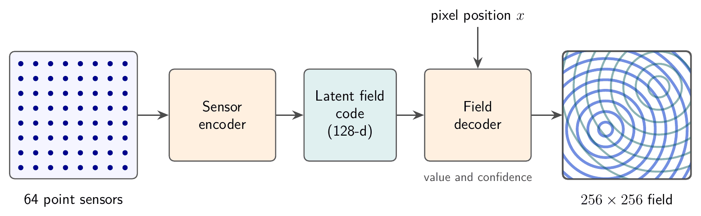
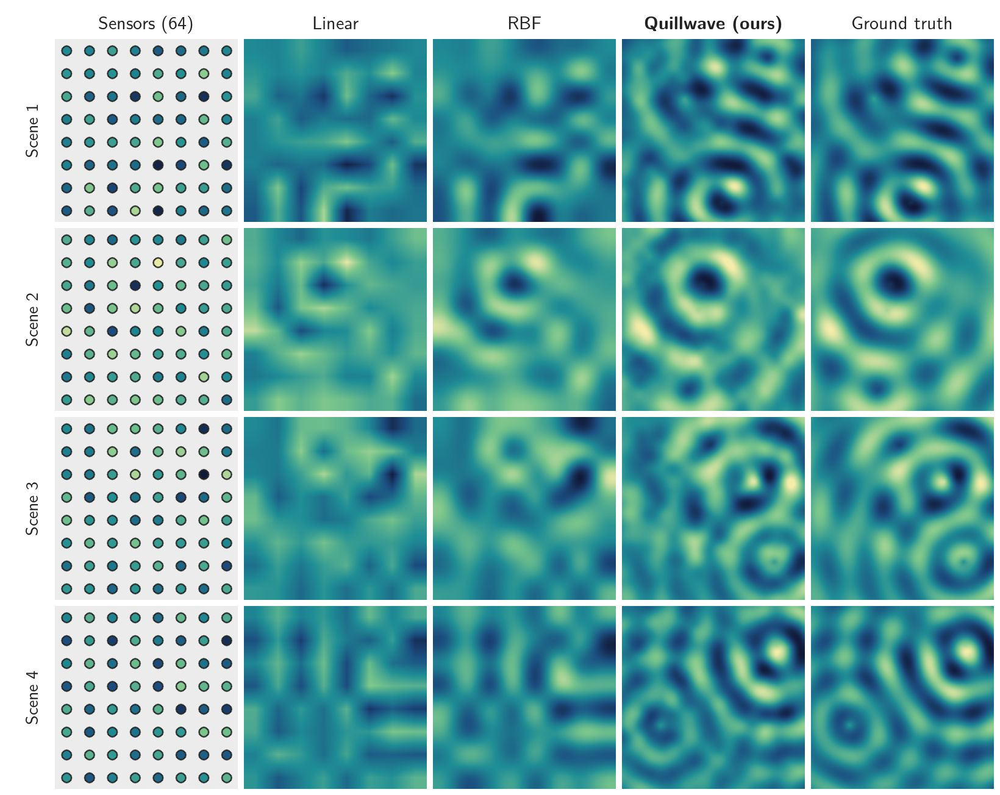
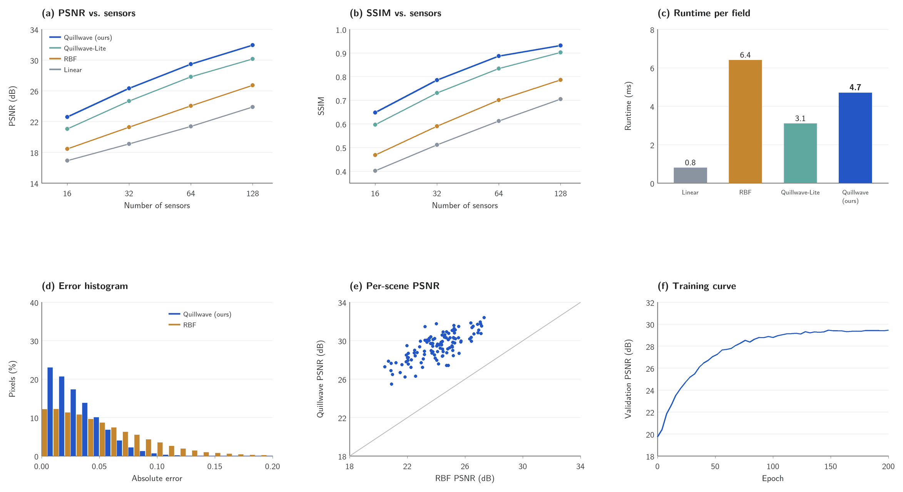

Quillwave: Sparse-Sensor Reconstruction of Synthetic Ripple Fields
Research in preparation
Abstract
Quillwave reconstructs a full 256×256 ripple field from 64 point sensors. Ripple fields are procedurally generated sums of interfering circular waves: cheap to synthesise, but hard to interpolate, because the wave fronts between sensors are lost by smooth interpolation. Quillwave encodes the sensor readings into a 128-dimensional latent field code and decodes it with a coordinate-based field decoder. On RippleBench-Synthetic, a benchmark of 500 synthetic test fields generated for this work, Quillwave reaches 29.46 dB PSNR and 0.887 SSIM, 5.41 dB above radial-basis interpolation (the best baseline), which is a 71.2% lower mean squared error. It is also 1.36× faster than radial-basis interpolation at inference. All results are on synthetic fields only.
This is research in preparation: there is no paper or public code yet.
Method

The input is 64 point sensors on a regular 8×8 grid. A sensor encoder maps the readings to a 128-dimensional latent field code, and a coordinate-based field decoder predicts the field value, together with a confidence, at every pixel. Quillwave-Lite is the ablation without the latent code: its decoder is conditioned on the raw readings instead. The model has 1.2M parameters and is trained on 2000 synthetic fields for 200 epochs; results are the mean over 5 training runs.
Qualitative Results

More scenes
Results
On RippleBench-Synthetic (64 sensors, 256×256 fields, mean over 5 training runs), Quillwave improves PSNR by 5.41 dB over the best baseline, radial-basis interpolation, a 71.2% reduction in mean squared error, and runs 1.36× faster than it (4.7 ms against 6.4 ms per field). Linear interpolation is faster still (0.8 ms) but far less accurate. The latent code accounts for part of the gain: the Quillwave-Lite ablation reaches 27.82 dB. Quillwave is the best method at every sensor count from 16 to 128. In a user study with 20 participants, the mean ease-of-use rating was 4.10 out of 5 and the mean perceived-quality rating 3.90 out of 5.
Table 1. Reconstruction quality on RippleBench-Synthetic (64 sensors, 256×256 fields, mean over 5 training runs). Higher PSNR and SSIM are better; lower runtime is better.
| Method | PSNR (dB) | SSIM | Runtime (ms) |
|---|---|---|---|
| Linear interpolation | 21.37 | 0.612 | 0.8 |
| Radial-basis interpolation | 24.05 | 0.701 | 6.4 |
| Quillwave-Lite (ablation) | 27.82 | 0.834 | 3.1 |
| Quillwave (ours) | 29.46 | 0.887 | 4.7 |
Table 2. PSNR (dB) on RippleBench-Synthetic as the number of sensors changes.
| Method | 16 sensors | 32 sensors | 64 sensors | 128 sensors |
|---|---|---|---|---|
| Linear interpolation | 16.92 | 19.10 | 21.37 | 23.88 |
| Radial-basis interpolation | 18.44 | 21.26 | 24.05 | 26.71 |
| Quillwave-Lite (ablation) | 21.03 | 24.67 | 27.82 | 30.15 |
| Quillwave (ours) | 22.58 | 26.31 | 29.46 | 31.94 |

Limitations
- Baselines are not compute-matched. Quillwave is trained for 3.5 GPU-hours, while the interpolation baselines need no training at all.
- Synthetic fields only. Every result is on RippleBench-Synthetic; no real sensor data was used, and behaviour on real measurements is unknown.
- Confidence is not calibration. The per-pixel confidence map that Quillwave outputs has not been checked against observed error rates, so it should not be read as a calibrated probability.
BibTeX
@misc{placeholder2026quillwave,
title = {Quillwave: Sparse-Sensor Reconstruction of Synthetic Ripple Fields},
author = {Ada Placeholder},
year = {2026},
note = {Research in preparation. Fictional entry for testing}
}